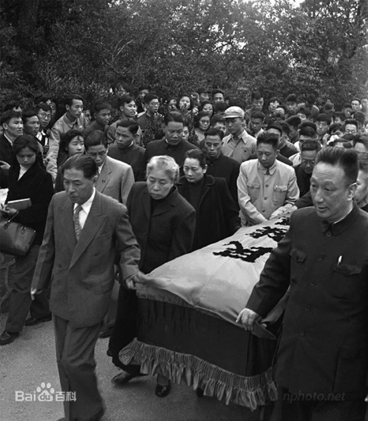
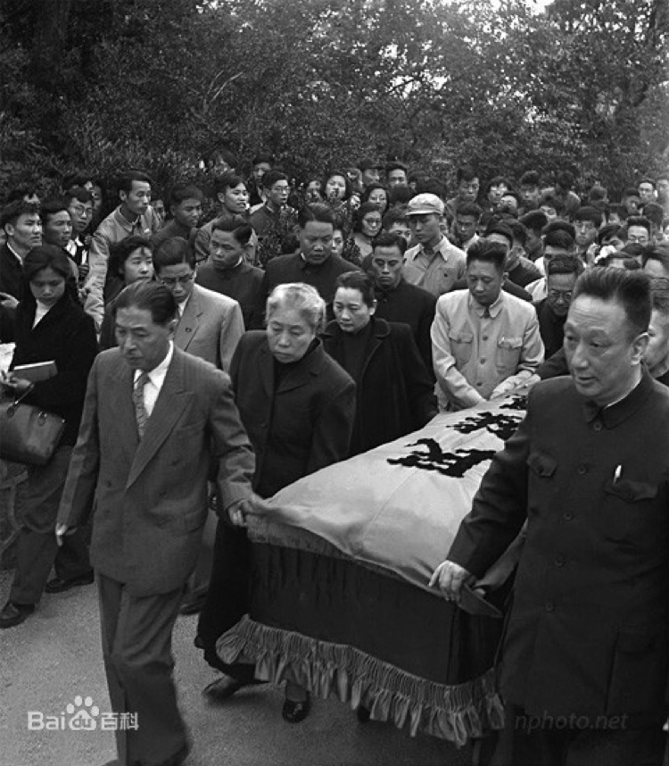

1881年9月
生于浙江绍兴城
1892年9月
入三味书屋从寿镜吾读书，课余影描图画。与章闰水建立友谊。
1896年6月
父亲去世。家境益艰。于本年开始写日记。
1902年1月
公费赴日本留学。4月，入弘文学院普通科江南班（为日语学习速成班）。
1910年8月
任绍兴中学堂教员兼监学。写个人的第一篇小说文言小说《怀旧》。
1918年5月
以鲁迅为笔名发表中国现代文学史上第一篇用现代体式创作的白话短篇小说《狂人日记》，载在《新青年》
第四卷第五号。
1923年8月
小说集《呐喊》出版；作《娜拉走后怎样》演讲，兼任女师大，世界语学校教师；《中国小说史略》上册出版。
1926年3月
“三·一八惨案”发生。4月，鲁迅作《死地》《记念刘和珍君》等抨击段祺瑞政府屠杀学生的罪行，遭追捕,
避难于山本医院。避难期间笔耕不辍。
1928年
参加中国革命互济会。本年，与创造社、太阳社大部分成员就“革命文学”问题展开论争。
1930年2月
国自由运动大同盟成立，为发起人之一。3月2日，出席中国左翼作家联盟成立大会，被选为常务委员，
作《对左翼作家联盟的意见》演讲。
1936年10月19日
因病逝世，享年55岁。


生平概况一览
鲁迅（1881年9月25日-1936年10月19日），原名周樟寿，后改名周树人，原字豫山，后改豫才，
曾留学日本仙台医科专门学校（肄业）。“鲁迅”是他1918年发表《狂人日记》时所用的笔名，也是他影响最为广泛的笔名。著名文
学家、思想家、革命家、民主战士，五四新文化运动的重要参与者，中国现代文学的奠基人。毛泽东曾评价：“鲁迅的方向，就是中
华民族新文化的方向。”
鲁迅一生在文学创作、文学批评、思想研究、文学史研究、翻译、美术理论引进、基础科学介绍和古籍校勘与研究等多个领域具有重 大贡献。他对于五四运动以后的中国社会思想文化发展具有重大影响，蜚声世界文坛，尤其在韩国、日本思想文化领域有极其重要的 地位和影响，被誉为“二十世纪东亚文化地图上占最大领土的作家”。
鲁迅一生在文学创作、文学批评、思想研究、文学史研究、翻译、美术理论引进、基础科学介绍和古籍校勘与研究等多个领域具有重 大贡献。他对于五四运动以后的中国社会思想文化发展具有重大影响，蜚声世界文坛，尤其在韩国、日本思想文化领域有极其重要的 地位和影响，被誉为“二十世纪东亚文化地图上占最大领土的作家”。